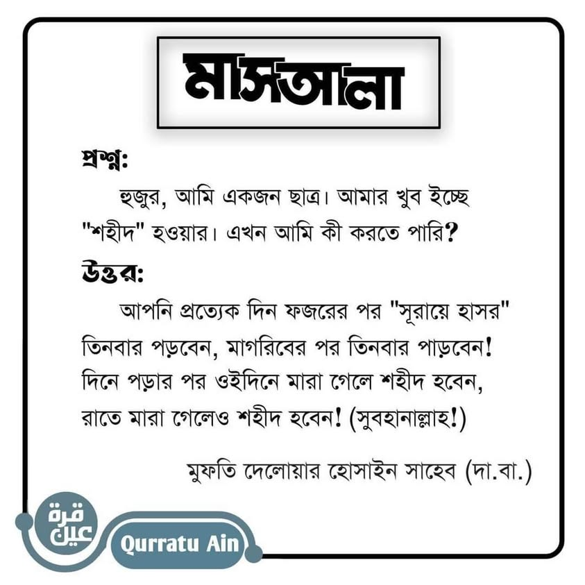

মুফতি দেলওয়ার সাহেবের এ বক্তব্য প্রচার হচ্ছে বেশ জোরেসোরে। এ সংক্রান্ত একটি হাদিসও…
২৫ জুন, ২০২১
মুফতি দেলওয়ার সাহেবের এ বক্তব্য প্রচার হচ্ছে বেশ জোরেসোরে। এ সংক্রান্ত একটি হাদিসও রয়েছে ঠিক। কিন্তু তা দুর্বল। অনেক মুহাক্কিক এ হাদিসকে দুর্বল আখ্যা দিয়েছেন।
যেমন-
শাইখ আহমদ শাকির রাহ. কৃত তিরমিজির তাহকিক- ৫/১৮২.
শাইখ শোয়াইব আরনাউত রাহ. কৃত মুসনাদে আহমদের তা'লিক- ৩৩/৪২১.
শাইখ আলবানি রাহ. কৃত জয়িফুত তারগিব ওয়াত-তারহিব-১/১৯২. জয়িফ সুনান তিরমিজি, জয়িফ সুনান আবি দাউদ।
এমন মহৎ ও শ্রেষ্ঠ মর্যাদা কোনো দুর্বল হাদিস দ্বারা সাব্যস্ত হতে পারে না। হাশরের তিন আয়াত পড়ে শাহাদাতের মর্যাদা পেয়ে যাচ্ছেন ভেবে আত্মতৃপ্তিতে ভোগার আগে আরেকবার ভাবুন।
